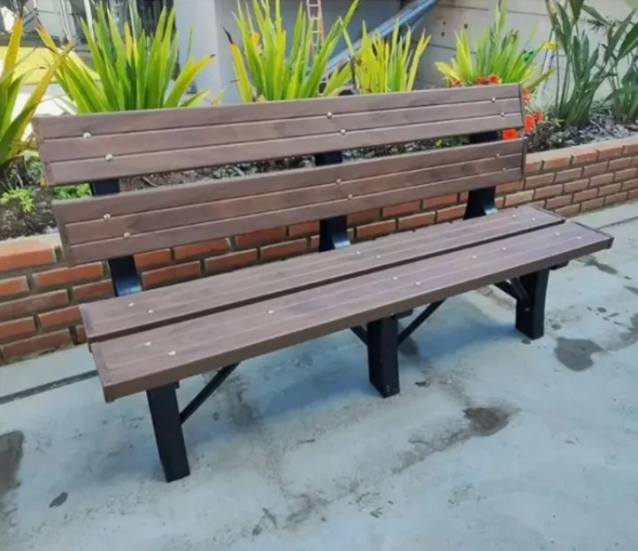
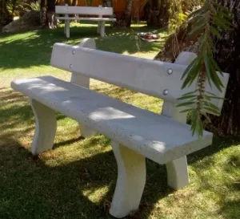

Participação
Sua opinião é importante para o futuro do SerrAzul. Participe das enquetes e contribua para decisões da comunidade.
Vote nas melhorias e prioridades da Fazenda SerrAzul.
Estamos definindo o novo padrão visual dos bancos das áreas comuns da Fazenda SerrAzul.

Banco de madeira plástica

Banco de concreto
Os resultados serão divulgados futuramente pela administração.